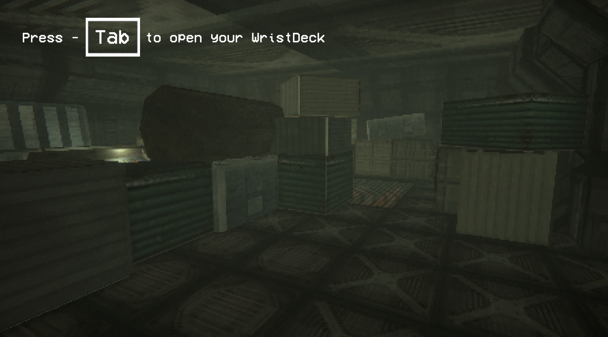

Heartfall | AKOB x HVA 🏆 Golden Dot Award Nominee
A preshow waiting room experience about heartbreak, developed with Another Kind of Blue and Inholland. Participants hold a glowing heart up high and work together to keep it from breaking.
Context & problem
Created for Another Kind of Blue and Inholland, the project turned a waiting room into a preshow about heartbreak. The challenge was a multi-user interaction where participants must coordinate their body movements to keep a projected heart in the air.
Target audience
Theater visitors, interactive installation audiences and creative technology researchers interested in motion capture preshows.

Features
Real-time skeletal tracking with Xbox Kinect, a custom TouchDesigner to Unity data bridge, simulated spherical gravity physics, and multi-user projection mapping onto visitor silhouettes.
Process
As lead programmer, I built the whole real-time pipeline. An Xbox Kinect captured positional data in TouchDesigner and streamed skeletal joints to Unity over OSC. Unity mapped the player bones into 2D space and ran gravity physics on a spherical object, then sent coordinates back to TouchDesigner to project the heart onto the players' silhouettes.

Takeaways
The Golden Dot Award nomination confirmed that combining motion tracking, a real-time physics engine and projection mapping can create a real connection between participants.
Other projects

